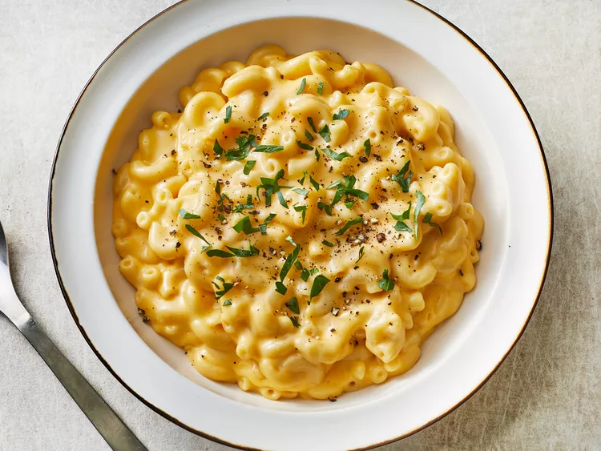

Mac & Cheese
Mac & Cheese for everyone!

Description
It has a ton of cheese and it taste great. It uses Trader Joe Cheese and pasta!
I haven't tried it, but it looks great! The Mac and Cheese is great no matter what!
Ingredients
-
1 Cup of pasta
-
3 tablespoons of Unexpected Chedar Cheese Spread
Steps
-
Boil the pasta dummy! Save 1/2 cup of the water though!
-
Stir the cheesey goodness in. Add a tablespoon of the water at a time.
Until you look at that pasta and say damn I want that.
-
EAT THAT STUFF, BROSEFF!